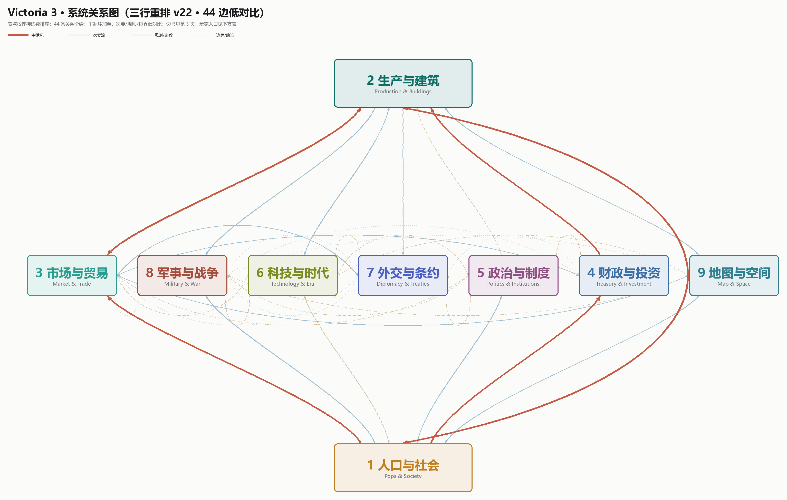
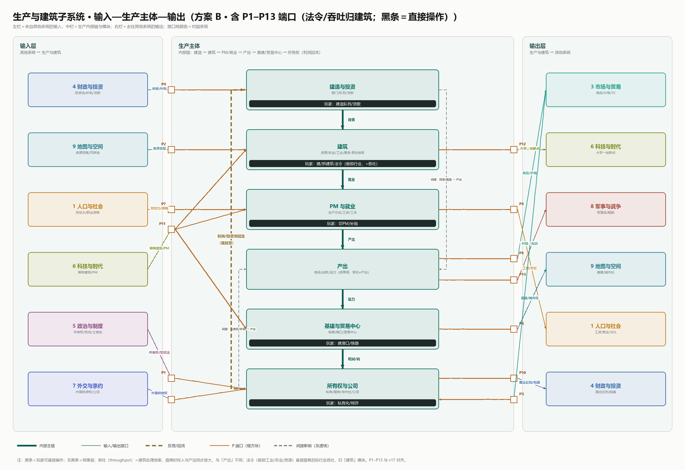
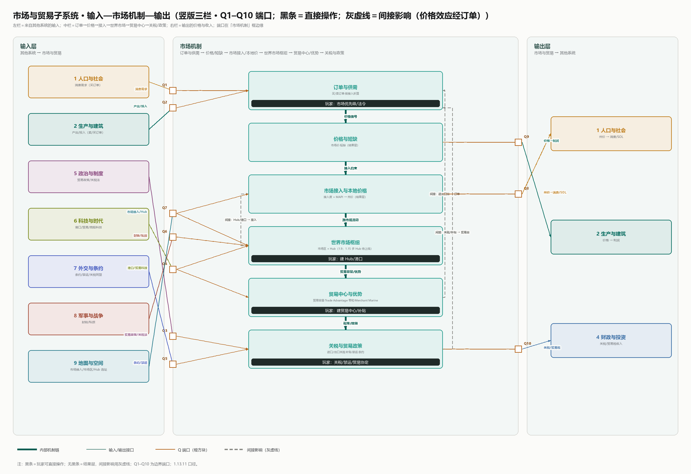
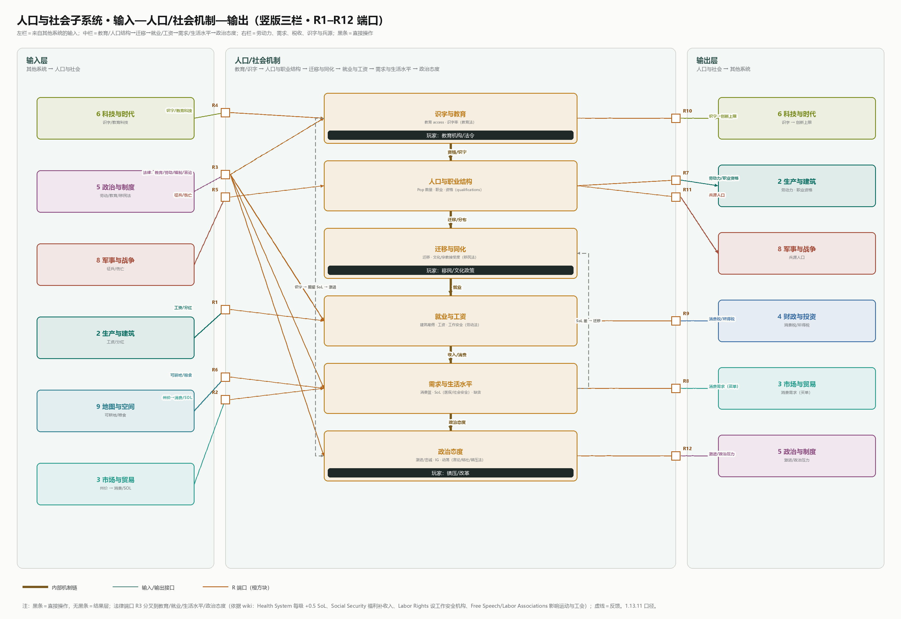

与许多常见的大战略或模拟游戏不同，《维多利亚3》（下称 V3）的经济与人口（Pop）并非挂在战略地图外侧的孤立数值表，而是嵌在一套全系统有向图里的核心传动轴。整部作品大致可拆解为 9 个顶层系统与 44 条有向关系（33 条核心边与 11 条补充边，见系统主图）。在游戏的实际运转中，“生产与建筑”和“政治与制度”分别构成物质再生产与规则改写的两大枢纽，由 7 条主循环边咬合成整局游戏的底层回流；玩家无法直接调拨微观物资或个体流向，只能在各系统暴露出的显式操作入口上施加国家层面的干预。
将枢纽节点的内部结构展开，物质与社会再生产的耦合由三组子系统端口完成对接：生产与建筑子系统（附图 A，端口 P1–P13）将地块、技术与人力组织进生产主体，吞吐商品、工资与股息；市场与贸易子系统（附图 B，端口 Q1–Q10）承接供求失衡，把买卖单转化为实时价格信号与贸易流；人口与社会子系统（附图 C，端口 R1–R12）在吸收工资与消费品后，结算生活水平（Standard of Living，下称 SoL）、阶层流动、人口增殖与政治激进化，并将劳动力与政治力量反馈回生产与制度两端。由此构成的底层回路隐含着鲜明的劳动价值论底色：商品产出与剩余价值创造归根结底锚定于参与劳动的人口（Pop），市场价格则只是供求关系在表层的浮动反映，只能传递余缺信号而无法自行锚定价值。
本文的分析基于 release/1.13.11 的原始数据文件，焦点落在这三组子系统高密度咬合的“生产—市场—人口”核心链路上：通过核对支撑它们运转的底层脚本结构与结算数学公式，厘清 V3 在经济与人口层面的架构取舍与认识论边界。

编号对应主图与附图；类型：主循环 / 次要流 / 规则参数 / 边界胁迫。完整表格见本页。



大多数策略与模拟游戏的经济系统只承担外生约束功能：通过资源采集、转化与消耗的速率差来卡住军事扩张或建造节奏。这类系统的参数合法性来自玩法验证，而不来自经济过程本身。
V3 是个例外。盘点 release/1.13.11 的底层脚本可以看到它的数据规模：53 种商品（goods）、69 个建筑组（building_groups）、111 种建筑（buildings）、184 个生产方式组（production_method_groups）、365 条生产方式（production_methods）、15 种职业（pop_types）、99 个财富等级消费包（buy_packages）以及 15 类消费需求（pop_needs）。这些条目彼此咬合，构成一套物质生产、分配、消费与人口再生产的闭合回路。玩家在其中的位置被严格限定为国家层面的制度与财政干预者，无法直接下场调配微观资源。
这套架构的野心，与它在中后期暴露的机制僵化出自同一处根源。市面上关于 V3 的体验评测已经很多，但少有分析直接进入脚本层去核对一个更基础的问题： 为了把社会再生产过程装进可实时结算的数值框架，V3 在数据结构和公式上到底做了哪些关键取舍？这些取舍如何支撑起它的模拟深度，又在哪个认识论前提上锁死了它的上限？而拆解这套重度架构，对于设计相对轻度的经济与模拟系统又能提供哪些可复用的启发？
V3 的经济数据由四层声明式文本表（declarative tables）构成，层与层之间通过键名显式引用（对应附图 A 的输入—生产主体—输出端口）：
| 层级 | 目录与规模 | 机制功能与组织方式 |
|---|---|---|
| 商品 | common/goods/（53） |
定义可交易或本地消费的物与服务，分军事、必需、工业、奢侈四类，赋予静态基础价格 cost。 |
| 建筑 | common/buildings/ （111） | 生产转化的空间容器，也是将生产配方（PM）、在岗人口（Pop）与投入产出商品汇聚到一起进行结算的具体节点；向上继承 69 个 building_groups 的公共属性（基础设施占用、现金储备、所有权规则）。 |
| 配方 (PM) | common/production_methods/（365） |
具体的投入产出转换规则，归入 184 个互斥的 production_method_groups（决定建筑在特定技术路线下的离散选择）。 |
| 人口 (Pop) | common/pop_types/ 等（15×99） |
劳动力供给方与最终消费载体。 |
把全部规则显式编码在数据表而非硬编码在底层代码中，除了保障 modding 透明度与可组合性外，还确立了系统的基本还原方式：一切生产活动都是有限个离散节点上的有向图转换。
在配方层（production_methods）内部，V3 做了一个非常干净的解耦。以工艺装备工坊的钢制工具配方 pm_steel 为例，其字段结构将修正项拆为两块（以下为节选，省略 texture）：
pm_steel = {
unlocking_technologies = { mechanical_tools }
building_modifiers = {
workforce_scaled = {
goods_input_wood_add = 30
goods_input_steel_add = 20
goods_output_tools_add = 80
}
level_scaled = {
building_employment_shopkeepers_add = 500
building_employment_laborers_add = 3500
building_employment_machinists_add = 500
building_employment_engineers_add = 500
}
}
}workforce_scaled 下的物料投入与产出严格按建筑当前的“实际人力配备率”线性缩放；level_scaled 下的岗位需求则只按“建筑等级”缩放（V3 没有全局岗位池，全国就业容量完全由各建筑等级下的 level_scaled 字段加总生成）。
pm_steel 源码没有把利润写成注释；按 goods 的静态 cost 复算，木材 30×20 = 600、钢 20×50 = 1000，投入合计 1600；工具 80×40 = 3200，单级静态毛利为 1600。也就是说，脚本只声明投入产出与岗位，利润是由同一张商品价格表折算出来的残余项。§1.1 的游戏截图正是这一档配方：工艺装备工坊在 pm_steel 下投入木材、钢并产出工具（图中数值按建筑等级与吞吐修正放大）。在跨度达 4–5 级的循环产业链中——例如“煤矿（最原始的镐铲开采 pm_picks_and_shovels_building_coal_mine 需消耗通用工具 tools × 5 产出 coal × 25 ）+ 铁矿 → 钢铁厂 → 工具厂（随技术路线由 pm_crude_tools → pm_pig_iron → pm_steel → pm_rubber_grips 升级，但产出的 tools 本身是通用工业品） → 回投矿山开采”——这套静态基础价格就是设计者在配平投入产出有向图时使用的统一核算标尺。
在人口侧，单个 pop 实体所处的位置由一套多维坐标决定（对应附图 C 的人口子系统端口）：社会分层体系（social_hierarchy） → 社会阶级（social_class） → 职业类型（pop_type，15 种） × 财富等级（wealth，99 级） × 文化 × 宗教。
根据 common/social_classes/readme.md 的说明，在早期版本中，V3 的社会阶层（ strata ）直接作为静态属性绑定在职业类型上，每个职业固定归属上、中或下层；而从 1.8 版本起，底层重构移除了职业自带的 strata ，改由顶层的 social_hierarchy 通过 allowed_professions 与 pop_criteria 动态判定 pop 落入哪个 social_class （每个 pop 必须无歧义地落入唯一阶级，否则会导致存档损坏或崩溃）。除了仍按职业映射的默认工业社会阶级划分（ 00_default.txt ）外，系统在 1.8 版本同步内置了英属印度种姓制（ 01_british_indian_caste_system.txt ），在 1.13 版本加入了江户幕府士农工商制（ 01_edo_system.txt ），并在文档中给出了宗教至上主义分层的脚本示例。社会分层由此脱离了单一职业的硬编码绑定，在数据结构上成为可随制度、文化与宗教条件改写的动态规则。
在消费侧，common/buy_packages/00_buy_packages.txt 定义了从 wealth_1 到 wealth_99 的 99 级消费包，呈现出两个关键特征：
simple_clothing）、基础食物（basic_food）、粗制物品（crude_items）与取暖（heating）；而到了高财富等级，basic_food 与 simple_clothing 等基础类别直接归零，被奢侈食物（luxury_food）、奢侈品（luxury_items）、自由流动（free_movement）和消遣娱乐（leisure）彻底替换。基于上述两部分结构，V3 与同类游戏的分水岭在于：它对经济与社会过程做了“本体式演绎”。
本文使用“本体”或“本体式”一词，不涉及哲学形而上学，也不是“更真实、更深刻”的褒义修辞，专指一种建模取向：把某个模拟领域（生产、消费、人口、政治）当作拥有自身内部结构、状态存量与演化规则的独立对象，不再充当军事点数或科技倒计时的从属函数。
在 V3 里，这种取向体现在生产必须受制于多级配方的物料与人力约束，消费必须受制于多轴身份与 99 级消费包的结构演进。这一选择同时划定了系统的初始边界：具体的人被压缩为统计意义上的消费与劳动聚合体，一切微观叙事都让位于宏观参数的闭合运转。不过从政治经济学视角看，将具体个人抽象为“按工时投入活劳动、按消费包再生产劳动力，并在工资与股息间分割净产出”的统计单元，恰恰在底层结构上复现了剩余价值生产与阶级再生产的理论图景。
静态数据表只搭起骨架，运行时的结算公式才决定系统走向。下文按“需求的物质基础 → 偏好的社会历史调制 → 生产中的符号承认 → 经济向政治的转化”四个层级，拆解 V3 的四处机制取舍。
面对 53 种商品，同类消费品之间如何替代（goods substitution）是需求侧的核心问题。社区与二手分析中最常见的误解是：某种商品涨价了，pop 就会自动改买便宜的替代品。
直接核对 common/pop_needs/00_pop_needs.txt 的字段结构与官方注释，可以确认替代权重的计算公式里根本没有实时市场价格这个变量。以基础食物 popneed_basic_food 为例：
popneed_basic_food = {
default = grain
entry = {
goods = grain
weight = 0.85
max_supply_share = 0.9 # 市场卖单份额超过此值后，不再继续推高权重
min_supply_share = 0.0 # 若 >0，无论供给多少都保底赋予该比例的基准权重
}
# 其余 entry：fish (1.0), meat (1.0), fruit (1.0), groceries (1.15)，max_supply_share 均为 0.9
}
文件头注释写得很清楚：每个条目的实际权重由基准 weight 乘以该商品在所属市场中的卖单份额（market Sell Order share）得出，并受 max_supply_share 封顶与 min_supply_share 保底（例如家庭用品 popneed_household_items 中，家具 furniture 的 min_supply_share 设为 0.10，保证其作为该类别的锚定品不会被玻璃或纸张完全替代掉）。此外，NEconomy 中的 MAX_DEMAND_ADJUSTMENT_BASE_AMOUNT = 0.01 与 SCALED_AMOUNT = 0.09 限制了单次更新的需求变动步长，使替代过程呈渐进收敛。
既然替代权重只看卖单份额，价格在哪起作用？查阅本地化概念百科 concept_goods_substitution_desc 的官方原文可以补齐另一半逻辑：
“基础价格较高的商品在满足需求方面的贡献将大于基础价格较低者。例如，一单位的杂货相当于数个单位的谷物。”
把脚本参数与官方百科合起来看，V3 实际上将需求结算拆成了职责截然不同的三步：
weight）决定，不依赖价格。市场产什么，pop 就跟着消费什么；cost 承担，依赖基础价格，但不依赖实时市场价格；cost 的 ±75% 区间波动）与 pop 收入决定，直接影响 SoL 升降。这一拆分让 V3 的需求结构顺应生产侧的物质可供性（availability）流动，不随短期价格信号剧烈摆动。工程上，这规避了“价格变动 ↔ 需求替代”双向实时耦合引发的高频震荡；机制上，则将“消费结构”与“购买力水平”拆在了两个独立层面。
如果只有供给份额替代，需求层就只是一个纯技术性的分配器。为了表达历史与文化对偏好的扭曲，V3 叠加了“文化痴迷”（obsession）与“宗教禁忌”（taboo）双层调制。
宗教禁忌写在 common/religions/religion.txt 中，全作仅 3 条（伊斯兰教三派禁 liquor 与 wine、犹太教禁 groceries、印度教禁 meat），效果是需求权重乘以 TABOO_DEMAND_MULT = 0.5。文化层（common/cultures/00_cultures.txt）除了定义 11 种商品、共 85 处初始痴迷外，同样允许定义 taboos，且源码注释明确声明文化禁忌覆盖宗教禁忌（# overrides religion taboos）。
在商品定义文件 00_goods.txt 中，每个可被痴迷的商品都带有一个成瘾倾向系数 obsession_chance （其余 31 种工业/军事/基础品无此字段，机制上不可被痴迷），其数值分布呈明显的按商品品类分层的递减梯度：
10.0（极值隔离）：opium（鸦片）——全作唯一的高位极值，是第二梯队的 5 倍；2.0（传统成瘾品）：liquor, wine, tobacco；1.5（咖啡因与糖）：tea, coffee, sugar；1.0（奢侈品与工业耐用品）：porcelain, meat, fruit, automobiles, telephones, radios, luxury_clothes, luxury_furniture, fine_art；0.5（日常品与民用化军工/船只）：small_arms, aeroplanes, fish, groceries, clippers, steamers。痴迷不仅有初始配置，还会在运行时动态涌现（要求市场内该文化人口 ≥ 50000、供给达需求 0.5 倍以上，按每年 0.5% 基础概率乘供给与规模倍率判定，单文化上限 MAX_NUM_OBSESSIONS = 3）。一旦激活，它会通过四层机制改写系统状态：
第一层是类别内的保底与倍增。00_pop_needs.txt 为 intoxicants、luxury_drinks、luxury_items 配置了 obsession_demand_min = 0.75 与 obsession_demand_mult = 1.75，而 popneed_leisure（消遣）的倍率高达 2.0（保底 0.5）。这里的 obsession_demand_min 相当于给痴迷品加了硬性需求下限，直接绕过 §2.1“供给少就自动降权”的替代规则：哪怕市场彻底断货，pop 仍会维持该项需求。
第二层是类别间的零和支出腾挪。NPops 中的 OBSESSION_POP_NEED_EXPENSE_MULT = 0.25 规定，含痴迷品的需求类别会按痴迷数量扩大其在总消费预算中的占比，而多出来的开销直接从其他需求类别中扣减（money is given or taken from other needs）。迷上鸦片或咖啡，意味着基础食物或衣物的预算被实质性挤压。
第三层是“消遣容器”引发的军民双向竞争与政治干预。排查 popneed_leisure 的 9 个条目可以发现，这个类别实际上是一个吸纳非日常品的“爱好容器”：除艺术品（fine_art，权重 4）外，轻武器（small_arms）、飞机（aeroplanes）、帆船（clippers）和汽船（steamers）全部落在这里。其中 small_arms 同时是陆军战斗单位（8 处引用）与海军要塞的军工消耗品。在 IP4 DLC 的历史法案 amendment_american_second_amendment（美国宪法第二修正案）中，法案激活会直接调用 add_cultural_obsession = small_arms，给北方（yankee）与南方（dixie）文化挂上武器痴迷（撤销法案则调用 remove_cultural_obsession 移除）。结果是：成瘾/偏好既可以由政治法案直接生成，又会让民间狩猎射击爱好与国家军队补给在同一个商品池里争抢供给；到了战时艺术品减产、军火扩产，pop 还会按替代规则自动用枪支替代艺术品来填补消遣需求。
第四层是向人物特质与产业利益的反向传导 。在 common/character_traits/condition_traits.txt 的三个成瘾特质中，声望奖惩是逐物质定制的：酗酒（ alcoholic ）扣 -10 声望、鸦片瘾（ opium_addiction ）扣 -25 声望，而可卡因瘾（ cocaine_addiction ，需制药科技）反而加 +20 声望。不仅如此， opium_addiction 除扣减人物自身的健康与声望外，一旦持有该特质的角色成为国家统治者，其附带的国家修正（ country_modifier ）还会为全国鸦片种植园提供 +5% 吞吐率加成 ——统治阶层的消费成瘾在此直接反哺了供给端的既得利益集团。
Charters of Commerce 引入的名牌商品（prestige goods）与特许公司体系，进一步把“市场地位与符号承认”写进了底层公式。
全作共 72 个名牌商品（挂载于 218 家公司中的 144 家），分为两级：56 个具名历史品牌（如克虏伯火炮、福特汽车、阿萨姆红茶）在对应历史公司成立并繁荣时直接产出；16 个通用名牌（prestige_good_generic_*）则必须通过 journal_entries/05_prestige_goods.txt 的全球竞争机制解锁——国内相关公司保持繁荣（prosperous），且本国在该基础商品上的全球产量排名前 3（goods_production_rank <= 3），连续维持 36 个月。
作为前置条件的公司繁荣度，由生产率、满员建筑等级数和行政长官受欢迎度合成，且在 NEconomy 中设计了极陡的“涨慢跌快”斜率与滞回机制（hysteresis，即利用滞回现象设置激活与失效双阈值）：每周基础增长仅 +0.2 ，基础衰减却高达 -1.0 ；繁荣度达到 100 激活公司自身的繁荣增益，跌破 75 则失去繁荣状态（通用名牌商品则需在此繁荣状态与全球产量前 3 保持期间，通过前述 36 个月的任务日志进度条方能最终解锁）。
名牌商品不新增独立商品种类，而是作为基础商品（base_good）的符号强化态，按占比在四个维度生效（据 concept_prestige_good_desc 官方文案与 NEconomy 常量）：
+20% 的吞吐率加成（PRESTIGE_GOODS_INPUT_THROUGHPUT_BONUS = 0.2）；×3，并按市场内名牌占比提升贸易中心出口优势；真正的突破在于打通了生产端与消费端：全球产量前三所确立的“品牌承认”，一方面直接化作下游工厂的吞吐率乘数——即在雇佣劳动力（工时）不变的前提下，因为引入名牌钢或名牌工具而同步放大原料投入与成品产出，这恰好呼应了前文的劳动工时价值逻辑：生产率提升表现为同等活劳动在单位时间内推动并转化更大规模的生产资料，从而摊薄单位产品的直接劳动耗费；另一方面则以 5 倍速率把消费端推向文化痴迷。需求由此脱离外生给定的效用曲线，生产也不再只是纯技术转换，二者均受历史、文化与市场霸权改写。
在人这一侧，V3 把政治不满（激进化，radicalization）拆成了三条相互独立、各自封顶的月度增量通道（NPops defines）：
| 通道 | 月度增量上限 | 单通道累计封顶 | 强度缩放依据 |
|---|---|---|---|
| 低生活水平 | 0.003 (0.3%) |
0.15 (15%) |
当前 SoL 与期望最低 SoL 的差值。 |
| 受歧视 | 0.005 (0.5%) |
0.50 (50%) |
该 pop 的识字率（literacy rate）。 |
| 饥饿 | 轻 0.002 / 重 0.008 / 极重 0.02 (2.0%) |
轻 0.15 / 重 0.50 / 极重 0.75 (75%) |
所在州的粮食安全度。 |
这组系数直接亮出了设计者的政治社会学判断：
0.005 vs 0.003，封顶 50% vs 15%），且由识字率正向放大。如果把这条规则与转职资格公式（如 aristocrats.txt 的 qualifications）并置对照，就能看清其中的耦合链条：在转职公式里，识字率与财富共同构成阶层上升的乘数，但一旦该 pop 的文化受歧视（接纳度 < 4），资格增长率会直接乘以 0.1。普及教育原本旨在打开阶层流动通道；当制度性歧视把上升通道锁死（×0.1）时，识字率就会立刻在激进化公式里反转为制造激进分子的放大器。2%、封顶 75%），这与 laborers.txt 中政治参与度乘数（political_engagement_mult 在轻/重度饥荒时分别 +0.25 和 +1.0，大于“政治煽动”科技的 ×1.5）完全咬合。0.03 的比例转化忠诚或激进，但该系数在 SoL 超过 15 后开始线性衰减，到 SoL 30 时最多衰减为原来的 1/10。富人的境遇波动被设定为更难转化为激进政治情绪。最后， NPops 用四个生活水平锚点——均衡点（ equilibrium_sol = 5 ，恰好重合于饥饿阈值 SOL_STARVING_THRESHOLD = 5 ）、转折点（ transition_sol = 10 ）、净增长最大点（ max_sol = 15 ）和稳定点（ stable_sol = 25 ）——定义了人口出生率（月度 0.06%–0.45% ）与死亡率（月度 0.045%–0.55% ）的四段折线，并让出生率在 SoL 5–10 区间内滞后于死亡率下降。与此同时，系统在财富等级切换上引入了基于滞回现象的 ±2% 缓冲区间（ WEALTH_PROGRESS_WANTED_BUFFER = 1.02 与 ACCEPTABLE_DEFICIT = 0.98 ）：pop 收入必须达到下一级消费包成本的 102% 才会触发财富升级，跌破当前消费包成本的 98% 才会触发降级，以此滤除日常物价微幅波动引发的等级高频震荡。由此，“工资与物价 → 消费包与财富等级跃迁 → SoL → 人口增减与劳动力供给 / 政治激进化”被咬合成一套自驱动回路。
界定这套系统的上限，需要先剥离那些属于“工程完成度或脚本疏漏”的问题——比如全作没有全局岗位池，或者 00_pop_needs.txt 里 stimulants、free_movement、communication 三个类别明明含有可痴迷商品（茶、咖啡、汽车、电话），却漏配了类别级的 obsession_demand_* 参数，导致痴迷效果静默退化为全局默认值 1.5。这些问题都可以通过补丁修复。
真正构成上限的，是由底层表征方式锁死的结构性边界：只要沿用当前前提，有些部分在逻辑上就无法成立。V3 之所以只能算本体“式”演绎，原因正在于此。
V3 整个经济循环的唯一引擎是价格。建筑扩招（要求目标利润率 BUILDING_PROFIT_TARGET_TO_HIRE = 0.25）、提薪（0.25）、裁员、pop 升降财富等级，全部由实时价格驱动；而实时价格的算法，是在 00_goods.txt 预设的静态基础价格 cost 之上，按当前市场买卖单比例在 ±75% 区间内夹逼。
用价格这一个标量做全局协调信号，并非对劳动价值底色的全盘抛弃，而是一次兼顾政治经济学直觉与实时算力约束的工程折中。在生产与分配的底层结构上，V3 实际上已经搭建起一套准劳动价值的骨架：建筑配方将一切物料转化严格绑定在岗人力（ workforce_scaled ），没有活劳动的投入就无法产出任何新增价值；如 §1.1 的源码注释所示，开发者在设定 53 种商品的静态基础价格 cost 与配方投入产出比时，正是以单级建筑标准规模劳动力（工时）创造的净毛利区间为标尺来逆向配平的——换言之，静态常数 cost 实质上预先烘焙（pre-baked）了基准技术条件下的凝结劳动时间。对于需要每回合实时结算上百个地区市场与 365 条配方的策略游戏而言，免去运行时的全链工时重算、改以“预设静态 cost + ±75% 供求浮动”来驱动全局协调，在控制计算复杂度上具有高度的合理性。
更进一步看，这套底层的“工资—股息（剩余价值）”分配结构还直接支撑起了制度变迁的动态推演。一个典型的机制实证是经济体制法案中的“合作社所有制”（ law_cooperative_ownership ，定义于 common/laws/01_economic_system.txt ）：该法案通过将制造业、采掘、电力与私营基建等建筑组的工人所有制比例下限设为 100% （ allowed_collectivization_add = 1.0 ），并将特许公司向在岗劳动力支付的分红比例提高 75% （ building_company_worker_dividends_add = 0.75 ），使原本被金融区资本家或庄园贵族截留的建筑股息直接作为生产盈余返还给在岗工人自身。在游戏实战中，让劳动者直接支配这部分“剩余价值”会迅速拉升占人口绝大多数的中下层 Pop 的生活水平（SoL），进而触发 §1.2 所述的消费包跨数量级膨胀、瞬间激活庞大的国内有效需求，因此合作社路线常被视为中后期拉动内需与经济上限的强势路线之一。
这套折中机制的真正边界，在于它把理应随生产力演进而移动的“价值中心”锁死在了初始常数上。查 01_industry.txt 的钢铁厂配方可以看到：从早期的渗碳钢（ pm_blister_steel ，铁 40 + 煤 30 → 钢 65）一路升级到贝塞麦转炉（钢 90）、平炉（钢 120）乃至电弧炉（ pm_electric_arc ，铁 100 + 煤 30 + 电 30 → 钢 150），单位钢铁所需的活劳动与物料配比发生了根本改变，但钢铁的基础价格 cost 始终不变。在游戏运行中，生产力跃升固然不会简单演变为卖单严重过剩、把实时价格死死压在 -75% 的地板上——系统一方面通过后期高阶产业配方的跨部门投入协调（尽管配平未必完美）同步吸纳上游工业品，另一方面依靠随 SoL 提升（尤其是上述合作社所有制等分配改革）而呈指数级膨胀的 Pop 消费需求持续托底。但这也意味着，V3 实际上是用“固定基准价格之上的供求体量同步扩容”，顶替了现实政治经济学中“由生产力变革与社会必要劳动时间缩水所驱动的价值尺度重估”；静态价格基准以极高的工程效率完成了数值闭环，却也在运行时表征层面遮蔽了价值尺度随生产力演进的历史运动。
与价格引擎绑定的是核算形式的单一化。在 V3 的常规商业建筑逻辑里，生产得以自发持续的条件是账面盈利：产出市场价值大于投入成本与工资之和，建筑就招人扩张；一旦亏损且现金储备耗尽，就自动裁员停摆。
这套逻辑忠实还原了资本追逐利润的运动，但也把“货币价格—企业账面盈亏”的核算形式锁死为了整个模拟世界的底层语法。诚然，这并不意味着非利润导向的生产在游戏里完全缺席：一方面，底层的自给农建筑（subsistence buildings）本就不依赖市场利润率而自动维持生存运转；另一方面，既然玩家在机制上扮演的正是国家层面的宏观意志，完全可以通过开启财政补贴（subsidies）强行兜底亏损的民生或军工建筑，以保障关键使用价值的供给。然而，无论是不计盈亏的国家补贴，还是后期切换至指令经济（ law_command_economy ）等社会主义/计划经济体制，在脚本底层都无法脱离货币结算回路去直接平衡实物与工时——国家干预依然只能表现为用国库货币去填平单个建筑的账面收支缺口，而无法绕开价格—工资—利润这套市场记账外壳，直接组织使用价值的计划生产与配给。
第三重限制来自时间尺度与统计粒度。V3 模拟的是 1836–1936 年的百年长周期，最小操作与反馈粒度多在月、季与年（如 36 个月的名牌解锁、按年判定的痴迷涌现与数年的激进化累积），且人口以 POP_SIZE_PACKAGE = 10000 为标准包进行统计折算。
这个粒度非常适合观察工业化、城市化与阶级结构的宏观迁移，却在微观生存危机、生产周期与政治主体性上划出了多重还原边界。首先，在危机传导与物资交割上，一次致命的区域性歉收在百年宏观曲线上只会表现为月度死亡率从 0.00045 爬升到 0.00550 的平滑斜率，无法呈现微观尺度下“刚性缺口导致定居点瞬间崩盘”的断裂感；加之实时价格被限制在基础价格的 ±75% （ PRICE_RANGE = 0.75 ）区间内，且买卖单撮合机制决定了只要并非彻底断绝内外部供给的极端情况，买方几乎总是只要多出钱就能在市场上买到凭空兜底的商品（国内玩家社区将这一结算限制戏称为“火星市场”）。其次，在时间步长与流量结算上，V3 采用以周为单位的纯流量计算而无实物存量周转，这使得本具强季节性与漫长生长周期的农业，在游戏里不得不被设计成“全年每周均匀产出农作物、切换生产方式或发放补贴在下一周即刻生效”的工业流水线；同样为了迁就宏观时间步长（如海战按 SHIP_BATTLE_DAYS_BETWEEN_UPDATES = 5 天更新），历史上往往在数小时至数日内决出胜负的主力舰队决战，在游戏里也被妥协性地拉长成了旷日持久的消耗战。最后，在政治模拟上，把政治抗争完全写成三通道激进化系数的线性累加，实质上是把具有组织、纲领与历史偶发性的政治行动，还原成了对生活水平标量（SoL）的条件反射。
梳理这三重结构性边界，并非对 V3 设计取舍的苛责。相反，无论是用预烘焙了基准工时的静态价格配合 ±75% 有界浮动来控制算力、借货币收支外壳统合不同体制的建筑结算，还是用周度纯流量与万人统计包去平滑百年跨度的宏观演进，都是为了将庞杂的社会再生产装进可实时交互框架而做出的高明工程折中。恰恰因为这款作品拒绝把经济做成玩法装饰、真正尝试用“本体式”系统去触碰劳动价值创造、阶级分配与产业耦合的深水区，静态价格基准与动态价值重估的张力、货币记账外壳与非商品生产逻辑的摩擦、宏观流量步长与微观周期及政治主体性的裂缝，才会在脚本层面清晰地显露出来。大多数同类游戏没有暴露出这些问题，只是因为它们从一开始就没有走到能够触碰这层天花板的位置。
既然 V3 的认识论边界是由“以静态基准上的货币价格与纯流量撮合作为全局协调信号”这一前提决定的，那么反过来可以做一个系统设计上的对照实验： 如果把“市场交换与货币价格”从底层前提里彻底拿掉，切换到一个人口规模在数十至数百人、与外部世界彻底隔绝、内部不设货币与自由市场，仅靠排班工时与实物库存配给来维持生存的封闭定居点模拟环境（例如孤立外星殖民地或极端环境避难所题材的生存建造游戏原型）中，同样去协调一套多级产业链、人口再生产与派系政治，底层系统架构会发生什么变化？
在这个前提下，基于货币媒介的自发交换本来就没有发生条件，协调机制必须从“价格信号”切换为“实物物料平衡 + 劳动工时核算”。把 V3 的机制逐项放进这个无市场环境里过一遍筛子，哪些能留、哪些得重写便一目了然：
| V3 机制模块 | 无市场系统中的去留 | 原因说明 |
|---|---|---|
| 四层数据表与 DAG 配方网络 | 直接保留 | 原材料 → 中间品 → 消费品的有向无环图反映的是物质转换的技术拓扑，与是否存在市场无关。 |
供给份额驱动的替代权重（weight + min/max_share + 渐进收敛） |
保留结构，换自变量 | 因 V3 替代方向本就不依赖价格（§2.1），直接把“市场卖单份额”换成“物理库存份额”，就能零成本实现缺货时的连续自动替代。 |
| 分级跃迁的滞回机制 （如财富 1.02/0.98 、繁荣 100/75 ） | 直接保留 | 防止离散状态机在阈值边界每回合高频横跳的通用控制工程设计。 |
| 价格–工资–利润回路与 99 级购买力消费包 | 彻底废弃重写 | 无货币则无利润率与购买力，生产驱动力与消费分配机制必须重造。 |
拿掉价格层后，设计者遇到的第一个棘手问题是失去价值标尺：没有了 cost，设计期怎么查出哪条配方成了“投入极低、产出极高”的数值漏洞？替代机制里“1 单位高阶消费品抵几单位基础品”的量纲又由谁来定？
解法是将 V3 隐含在静态 cost 背后的设计期工时配平显式化，直接回到生产基底， 用“全链劳动工时含量”取代静态基础价格 。只要系统里的劳动是真实结算的物理量（具体岗位数 × 工作天数），任何产品的劳动含量都可以由直接劳动加上原料的间接劳动递归算出：
数学形式上，这就是一个标准的 Leontief 型投入产出逆矩阵：把配方表和岗位需求输进去，就能离线算出每一种产品的全链凝结工时（设计期再辅以资源品位和空间运输距离做多轴校准，不进玩家 UI）。
由此可以推导出一个政治经济学结论：在没有市场的系统里，劳动价值论作为核算标尺反而比在现实市场中更直接、更纯粹地成立。
原因恰恰反证了 §3.1：在市场体系下，价格围绕价值的供求波动、垄断溢价与要素报酬转化，构成了掩盖背后劳动消耗的“偏离项”；而在彻底移除了货币与市场交换的模拟中，这个偏离项从结构上消失了，凝结工时没有竞争者，直接成为设计期唯一的同质化核算尺度。随之而来的另一个推论是，技术进步在系统内部变成了实打实的净增益：市场条件下“技术省劳”往往伴随着价格战、资本截留或结构性失业；而在一个劳动力真正稀缺、以实物与工时直接平衡的封闭系统里，“新配方使单位产品工时含量下降”直接等于“同样的稀缺劳动力能养活更多人、产出更多使用价值”。
在人口与消费侧，为了不让失去购买力机制的 pop 退化成死板的配给接收器，对照原型将 pop 重构为拥有内部稳态存量（homeostatic stock）的主体，并严格拆成不可混同的三层：
这类内稳态设计最容易翻车的地方，是把所有亏空后果做成同一条曲线，导致本体系统退化成“第二条血条”。为了立住“本体”二字，亏空后果必须分布在具有不同响应斜率的时间尺度上：当下立即折减劳动能力（下调效率乘数 < 1）；中期通过四段折线压低生育意愿、推高疾病与死亡率；长期则通过情绪存量的跌落，按“各派系吸引力倾向分布 × 激进化概率”的乘算公式，在每次结算时驱动人口按比例转向特定政治派系。
但如果我们用审视 V3 的同样尺度来反观这套设计，会发现一个更深的认识论事实：把“政治情绪”当成与水、食物并列的本体存量维度，并用“情绪水位跌落 × 派系倾向分布”去结算政治派系的演变，在理论上同样是一次还原——只不过 V3 是把政治还原成了“市场购买力（SoL）的函数”，而这里则是把政治还原成了“生理–心理内稳态耗散的函数”。
对照实验挑明了 V3 机械感的根源：问题不出在某几个具体公式的选型上，而在于 任何试图用闭合状态机与差分方程去推演人类社会的设计，都注定要在某个环节把复杂的社会实践还原为可计算的标量与存量 。价格引擎有价格引擎遮蔽的东西（动态价值重估与非货币直接配给），内稳态与实物核算引擎也有它必须简化的东西（政治意识的生理化还原）。观察底层前提替换后上限如何位移、又在何处重新落下，正是这场对照实验的目的。
那么，该用什么标准衡量《维多利亚3》这类试图以本体式系统演绎社会过程的作品？
如果把二十世纪政治经济学史上著名的“经济计算论战”（Socialist Calculation Debate）拿来做参照，会发现电子游戏可能是唯一能把这场论战真正跑起来的媒介。纸面上的理论交锋往往围绕“静态均衡解在数学上能不能算出来”打转；但无论是 V3 的市场价格模拟，还是第 4 节对照实验里的工时与实物配给模拟，一旦放进动态时间步长里跑起来，玩家就会立刻撞上经济协调真正的死结：信息、生产周期与人的反应速度三者永远不同步。你完全可以用矩阵算出明年的粮食缺口与最优配方，但今年的劳动力已经分出去了，工厂扩建要等周期，而人口的饥饿与情绪激进化不会等你算完账再发作。这种跨时间尺度的动态错位，只有交互式系统才能直观暴露。
拆解 V3 的意义不在于给出购买评分或现成公式表，而在于探明一条连接社会理论与系统设计的路径：通过严谨的数据分层、耦合参数与状态机设计，在游戏媒介中实现某种关于社会再生产的“本体式呈现”，在工程上完全走得通，也经得起继续深挖。
落回具体实践，可以归结出两点：
在 工程与设计工具箱 层面，V3 的底层脚本证明了“机制结构”与“压力引擎”是可以剥离的。哪怕你的项目完全不做市场和货币，也依然可以从 V3 干净地搬走它的声明式数据继承树、供给份额驱动的连续替代接口、多通道独立封顶的激进化累加器，以及带滞回机制的分级跃迁范式；反之，若要设计算力开销可控的中轻度市场经济系统，V3“以设计期预烘焙静态 cost + 有界供求夹逼替代实时复杂均衡、以物理供给份额直接驱动需求替代”的工程折中，本身也是一套即插即用的降维范式。
在 作品评价 层面，V3 的结构性缺陷与它的设计野心本就同源。它在商业策略游戏的框架里，罕见地没有把经济当成玩法背景板，而是正面搭建了一套横跨生产、分配、消费偏好、文化成瘾、符号垄断与政治动员的闭合模型。即便这套模型最终受制于静态价格基准、货币记账外壳与统计还原边界而止步于本体“式”演绎，它已经探明的机制深度与暴露出的认识论问题，依然是后续同类设计绕不开的参照系。
| 项 | 说明 |
|---|---|
| 版本锚定 | Victoria 3 正式版 release/1.13.11（rev 15aa89ae429b6bcff8d195f2a650f98ba95cd64c），含 18 个 DLC 目录。后续补丁（1.14+）可能改动具体数值与字段。 |
| 直读文件范围 | ① 官方文档 ： game/common/ 下 82 份 .md （含字段 schema 与 social_classes/readme.md 等机制说明）； ② 核心脚本 ： goods/00_goods.txt （全文）、 buildings/ 与 building_groups/ 、 production_methods/ 与 production_method_groups/ 、 pop_needs/00_pop_needs.txt （全文）、 buy_packages/00_buy_packages.txt 、 pop_types/ （ laborers.txt / aristocrats.txt 等）、 social_classes/ 与 social_hierarchies/ 、 laws/01_economic_system.txt 、 cultures/00_cultures.txt 、 religions/religion.txt （全文）、 prestige_goods/ 、 company_types/ 、 journal_entries/05_prestige_goods.txt 、 amendments/00_amendments_historical_04.txt 、 character_traits/condition_traits.txt ； ③ 常量与百科 ： defines/00_defines.txt （ NEconomy / NPops 等）及 localization/simp_chinese/ 下 concepts_l_simp_chinese.yml 、 laws_l_simp_chinese.yml 、 modifiers_l_simp_chinese.yml （提供官方机制解释并动态引用 GetDefine 的文本层）。 |
| 方法学校正 | 实测发现随附 .md 文档与 .txt 实际运行数据存在局部不同步（如 company_charter_types.md 枚举写为 new_industry，而 00_company_charter_types.txt 实际数据为 industry）。文中所有具体参数与枚举均以 .txt 数据脚本和 defines 实测值为准。 |
| 已知局限 | 本次拆解限于脚本与定义层静态核查，未对 C++ 二进制主程序内部的硬编码撮合细节（如 obsession_demand_min 与 weight 在引擎底层的精确结合顺序）做反编译验证；利益集团（interest_groups）与政治运动的内部权重公式亦不在本文聚焦范围内。 |
| 图文处理 | 机制核查、判断与结论由作者完成；文字整理与句式润色使用 AI 工具（Gemini 4 / DeepSeek）辅助。系统示意图（主图 v22、44 条边号页、附图 A/B/C）由 AI 辅助绘制、作者核对；§1.1 工艺装备工坊截图为作者在 Victoria 3 release/1.13.11 中文界面游戏内截取。 |
拆解过程与更细的原始脚本寻址表见作品集归档。
数据基准与说明 - 拆解版本：
Victoria 3—release/1.13.11（Git rev15aa89ae429b6bcff8d195f2a650f98ba95cd64c，含截至 Charters of Commerce / IP4 的 18 个扩展包目录）。 - 一手来源：直读游戏安装目录game/common/下 133 个子目录的数据脚本、随本体分发的 82 份 modding 文档、common/defines/00_defines.txt全局常量，以及localization/simp_chinese/concepts_l_simp_chinese.yml游戏内概念百科（全库唯一提供官方机制解释且动态引用defines数值的文本层）。 - 标注约定：文中机制参数与字段结构均核对自原始文件；涉及设计意图还原、理论批判与跨系统迁移的判断，在各节末尾标注为【推断】。第 4 节引用的对照原型已做脱敏处理，仅保留数学形式与架构分层。
【本节核查标注】 - 一手事实 ：四层数据目录与规模； pm_steel 与 pm_picks_and_shovels_building_coal_mine 的字段结构，以及按 goods/cost 复算静态毛利的核对； social_classes/readme.md 关于 1.8 版本移除职业自带 strata 改为动态判定的重构说明，以及 1.8 英属印度种姓制 / 1.13 江户幕府士农工商制文件； buy_packages 在 wealth_1 （Sum=151, political_strength=0.03）与 wealth_99 （Sum=1,708,352, political_strength=1500）的数值对比与类别替换。 - 推断 ：对源码注释反映“设计期静态价格标尺”的判断；消费包跨数量级膨胀与结构替换抑制普遍生产过剩的推论；将声明式数据表与多轴状态空间概括为“本体式演绎”，以及对人的统计抽象复现剩余价值生产与阶级再生产图景的分析。
【本节核查标注】 - 一手事实 ： 00_pop_needs.txt 参数结构与注释； concept_goods_substitution_desc 与 concept_prestige_good_desc 官方百科原文； obsession_chance 五档分布； popneed_leisure 9 个条目、 small_arms 军民两用引用数、美国第二修正案 add_cultural_obsession 脚本； condition_traits.txt 三个成瘾特质声望值及统治者条件下（ country_modifier ）全国鸦片种植园 +5% 吞吐加成；72 个名牌商品、全球前 3 产量维持 36 个月任务日志解锁逻辑、公司繁荣度 +0.2/-1.0 速率与 100/75 滞回；激进化三通道系数、SoL 15–30 冲击衰减、 aristocrats.txt 歧视 ×0.1 乘数、 laborers.txt 参与度乘数、人口四段折线锚点（5/10/15/25）及财富滞回（ 1.02/0.98 ）。 - 推断 ：对“替代方向与量纲分离”的机制拆解；对 popneed_leisure 作为“爱好容器”引发军民供给挤压的分析；对名牌商品吞吐率加成（同工时同步放大投入与产出）呼应劳动工时价值逻辑的解读；对“识字率 × 歧视封锁（×0.1）→ 激进化放大”耦合链条的解读。
【本节核查标注】 - 一手事实 ：价格 ±75% （ PRICE_RANGE = 0.75 ）波动区间； BUILDING_PROFIT_TARGET_TO_HIRE = 0.25 等利润阈值； 01_economic_system.txt 中合作社所有制（ law_cooperative_ownership ， allowed_collectivization_add = 1.0 、 building_company_worker_dividends_add = 0.75 ）与指令经济（ law_command_economy ）参数；钢铁厂四级 PM（ pm_blister_steel 至 pm_electric_arc ）投入产出数据；国家补贴（ subsidies ）与自给农建筑（subsistence buildings）机制； POP_SIZE_PACKAGE = 10000 、农业周度 workforce_scaled 产出与海战步长 SHIP_BATTLE_DAYS_BETWEEN_UPDATES = 5 ； stimulants 等三类漏配 obsession_demand_* 参数的事实。 - 推断 ：静态基础价格 cost 预烘焙基准工时的工程折中及遮蔽动态价值尺度重估的分析；合作社所有制下工人支配剩余价值拉升 SoL 与内需市场的机制解读；货币盈亏记账外壳对非商品直接配给的锁定判断；有界价格（“火星市场”）、周度纯流量无存量结算与宏观时间步长的还原边界分析。
【本节核查标注】 - 一手事实 ：对照表中涉及 V3 的机制项（四层结构、替代权重、三次出现的滞回机制、价格利润回路）。 - 推断 ：Leontief 投入产出工时核算公式、无价格偏离项下劳动价值论直接成立及技术省劳无损耗呈现的推论；本体层—意愿层—配给层三层结构、两段份额制、多时间尺度不同斜率设计，以及对“情绪本体化将政治还原为生理-心理稳态”的反向认识论审视。
【本节核查标注】 - 一手事实：无新增脚本数值。 - 推断：游戏作为“经济计算论战”思想实验装置（揭示信息、生产周期与人的反应速度三者异步性）的判断；关于“通过系统设计实现本体式呈现”的主线结论及工具箱复用、作品定位两条副线收束。